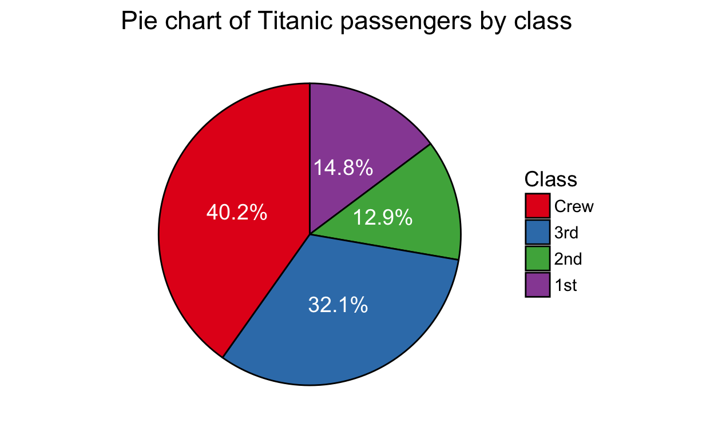
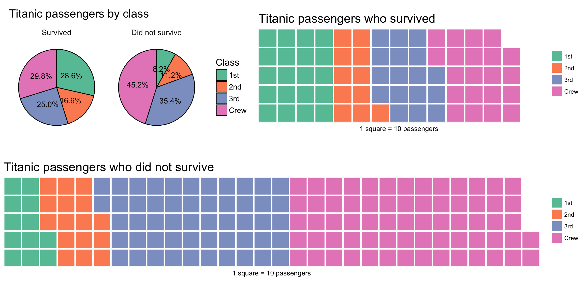
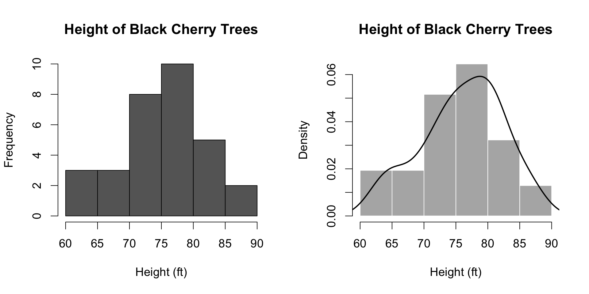
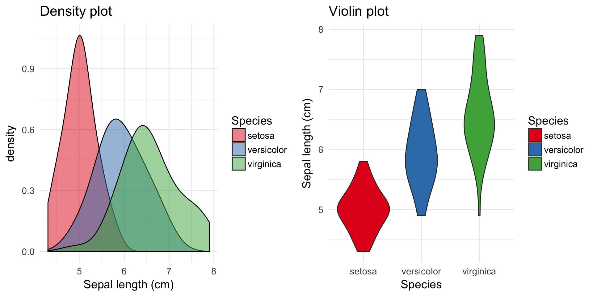
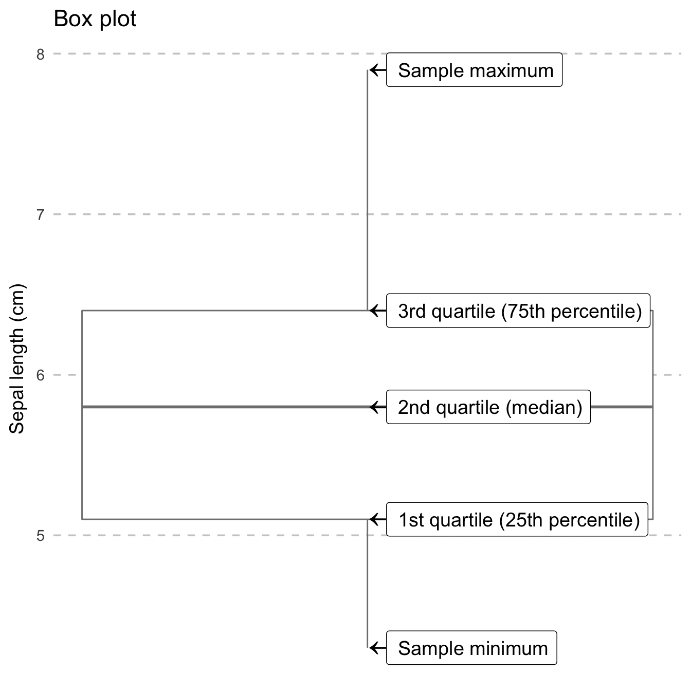
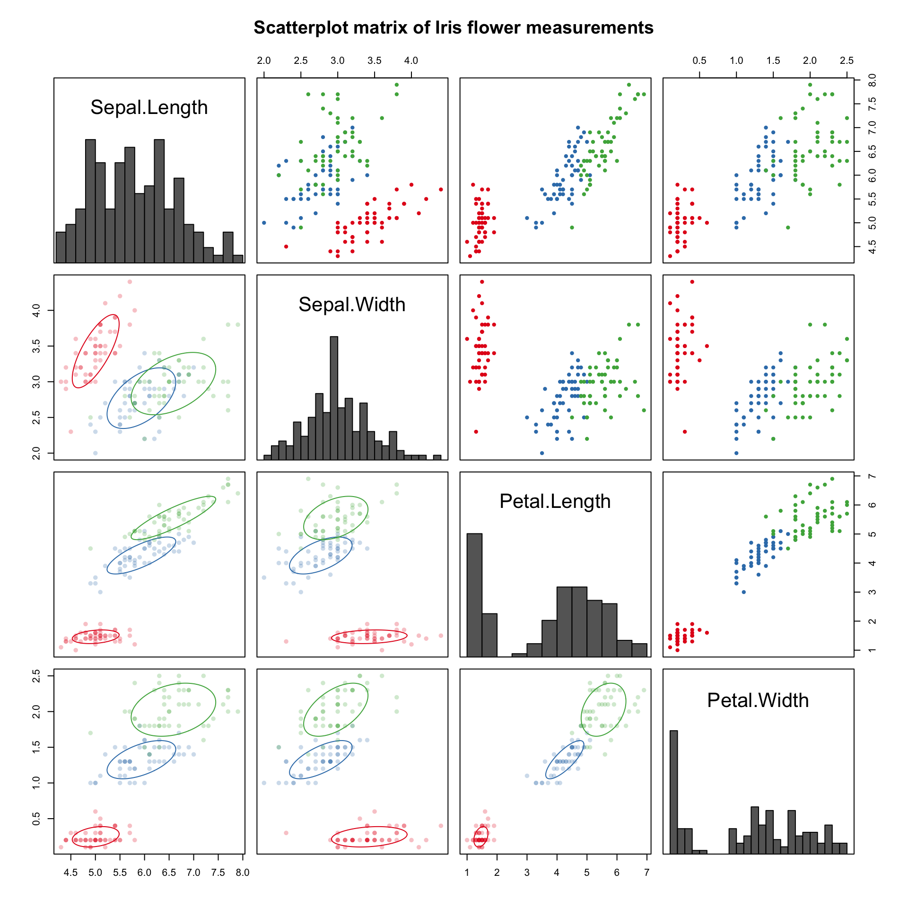
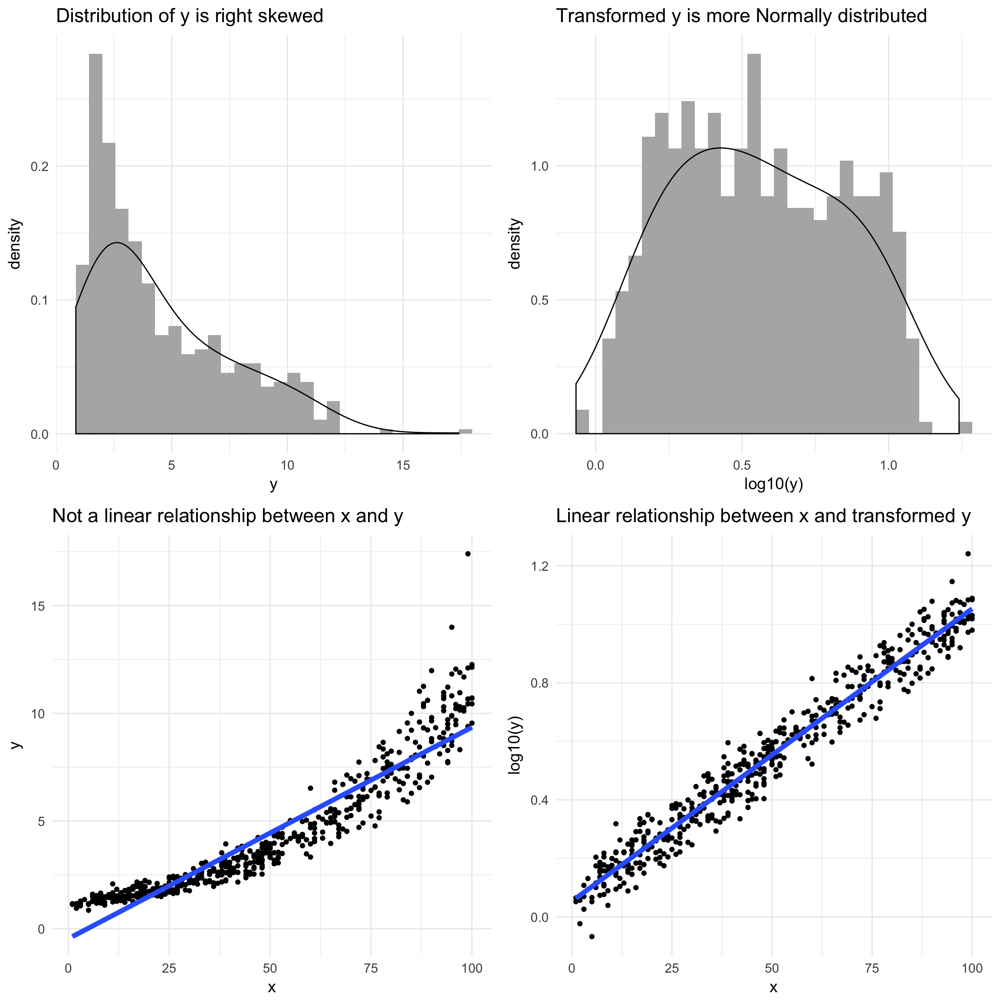
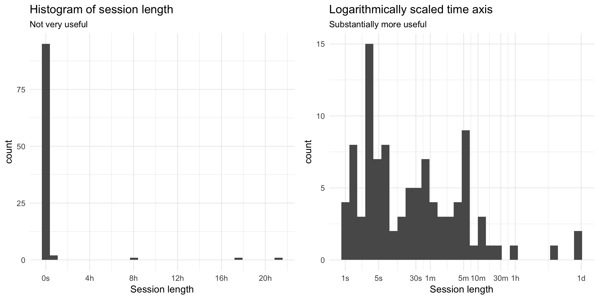

Introduction
Heat maps, stacked area plots, mosaic plots, choropleths – oh my! There are so many different ways to visually convey relationships and patterns in data! In this workshop on data visualization literacy, you’ll learn to recognize many popular types of charts and how to glean insights from them.
This workshop is available as open source. There is an interactive version and a static version.
| Contact Information | |
|---|---|
| Work | mikhail at wikimedia dot org |
| Personal | mikhail at mpopov dot com |
| IRC | bearloga in #wikimedia-discovery, etc. |
| bearloga |
Terms and basics
Data visualization as storytelling
Graphical displays should:
- Show the data
- Induce the viewer to think about the substance rather than graphic design or format
- Avoid distorting the data
- Present many numbers in a small space
- Make large data sets coherent
- Encourage the eye to compare different pieces of data
– Edward R. Tufte, The Visual Display of Quantitative Information
Types of variables
- Continuous variables have an infinite range of possible values
- Examples: time, age, weight, lengths (height, distance, time spent online), drug dosage
- Categorical / discrete / qualitative:
- Nominal variables have two or more categories that do not have an intrinsic order
- Examples: gender, ethnicity, controls vs test group, operating system
- Ordinal variables are like nominal, but the categories have an ordering/ranking
- Examples: Likert (rating) scale, number of visits to a website
Things to look for
- Title (most plots should have this)
- Axis labels (almost all plots should have this)
- How many variables and their types
- Including ones used to dictate colors, shapes, patterns, sizes, opacities, etc.
- Independent (“predictor”) variables (e.g. time) are usually on the X (horizontal) axis
- Occasionally time is plotted on the vertical axis for specific reasons
- Dependent (“outcome” / “response”) variables are usually on the Y (vertical) axis
- Scales (especially log-transformed ones)
Common visualizations
Pies, Waffles, Bars, and Tables
A pie chart and a bar chart (sometimes called a bar plot) are an easy way to visually compare values. The pie chart – where the slices represent proportions of the whole – is excellent for 2-4 categories, the table is great for 1-8 categories, and the bars’ heights work well for comparing more than 5 categories.
Notice how the use of color allows us to compare survivorship within classes.
| Class | Did not survive | Survived |
|---|---|---|
| 1st | 122 | 203 |
| 2nd | 167 | 118 |
| 3rd | 528 | 178 |
| Crew | 673 | 212 |
In the past decade, an alternative to the pie chart called waffle charts (or “square pie charts”) has gained popularity at representing relative sizes between groups. (See See Women in IT – Squaring the Pie?.) For example, it is much easier to visually compare 11 squares (2nd class passengers who survived) to 20 squares (1st class passengers who survived) than 1 slice to another slice that is 1.8 times bigger:

Histograms and Densities
A histogram shows the distribution of a continuous variable by splitting it into bins and counting how many observations fall into each bin (left). Sometimes those counts are divided by the total number of observation to yield proportions/probabilities instead (right). Note that the histogram on the right also includes a probability density estimate.

Comparing Distributions
When you see one of these, they are for comparing distributions of a continuous variable (such as sepal length of Iris flowers) between different groups (such as different species):

The density plot on the left is like a smooth histogram that doesn’t discretize the variable into bins. The violin plot on the right is a rotated version that makes it easier to perform the comparison because the densities (distributions) are not overlapping.
A box-and-whiskers chart (also known as a box plot) allows you to visually compare the distributions by way of a five number summary which includes:
- Sample minimum (the smallest value)
- First quartile (Q1) which is the 25th percentile
- Second quartile (Q2) also known as the median
- Third quartile (Q3) which is the 75th percentile
- Sample maximum (the largest value)

My personal preference is when a violin plot and a box plot are combined so you still see the distribution in case there are multiple peaks – or modes – (something you can’t see with a box plot) but you also see the summaries:
Notice how the box plot hides the three modes.
Multiple variables
Scatter plots are the most popular and simplest way to investigate relationships between quantitative variables:

Shape and color of the points are determined by the species. Shapes are often used together with color to make the graphic better for colorblindness and grayscale printing.
In fact, data scientists and analysts often use scatterplot matrices to look at many different relationships between pairs of variables simultaneously:

At first glance there is a lot going on in that particular matrix, but really there are three main components that we can focus on just one at a time:
- the upper triangle panels have basic scatter plots with points colored according to species for each pair of variables,
- the diagonal panels have histograms of the individual variables, and
- the lower triangle panels are also scatterplots, but with ellipses tracing the two-dimensional densities (assuming Normality).
Mosaic plots are used to visualize the relationships between two or more qualitative variables.
Other visualizations
Heat maps
Tree maps
Treemapping is a way to visualize hierarchical (nested) data as rectangles within other rectangles. It is not dissimilar to a mosaic plot!
Choropleths
Choropleths are geographical maps that are colored and/or shaded according to some variable such as population density.
Scales and transformed data
Sometimes the author of the visualization has chosen to apply a transformation to the data because the data is skewed. It is important to watch out for these, especially logarithmic scales.

It is possible (but rare) to encounter logarithmically scaled time axes, which are helpful when you have long tails caused by outliers:

Assessment
Some questions to verify that you understand the core concepts in data visualization:
Appendix
Visual essays
- A visual introduction to machine learning by Stephanie Yee and Tony Chu
- Exploring Histograms by Aran Lunzer and Amelia McNamara
- Algorithms Tour: How data science is woven into the fabric of StitchFix
- An Interactive Visualization of Every Line in Hamilton by Shirley Wu
- Constructed Career Paths from Job Switching Data by Nathan Yau
Collections
Further reading
Making your own
- Visualize This: The FlowingData Guide to Design, Visualization, and Statistics by Nathan Yau
- R Graphics Cookbook by Winston Chang
- ggplot2: Elegant Graphics for Data Analysis by Hadley Wickham
- Data Visualization with Python and JavaScript by Kyran Dale
- SVG Animations: From Common UX Implementations to Complex Responsive Animation by Sarah Drasner
- D3.js in Action by Elijah Meeks